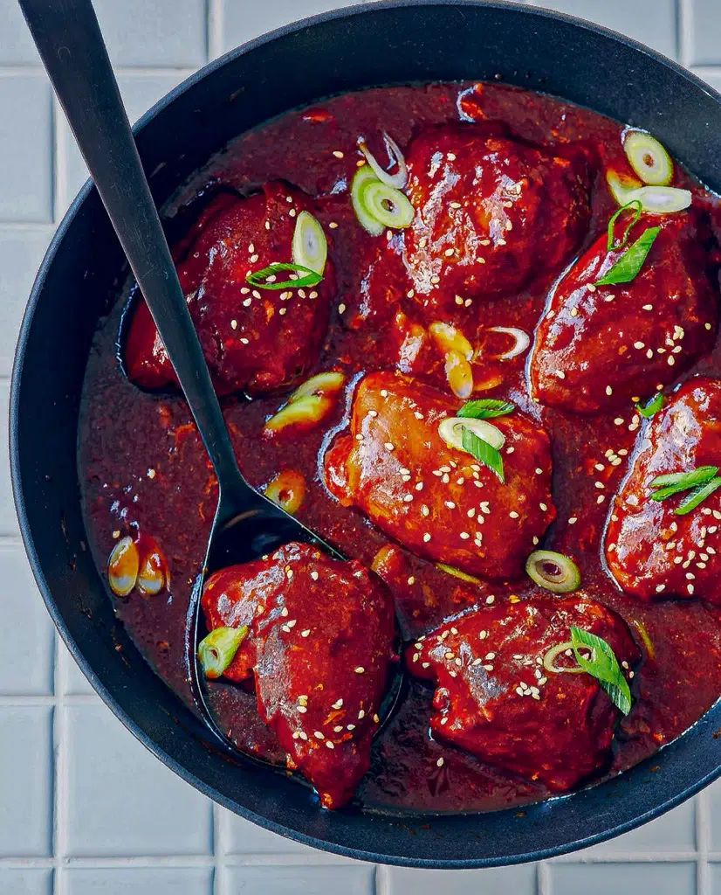
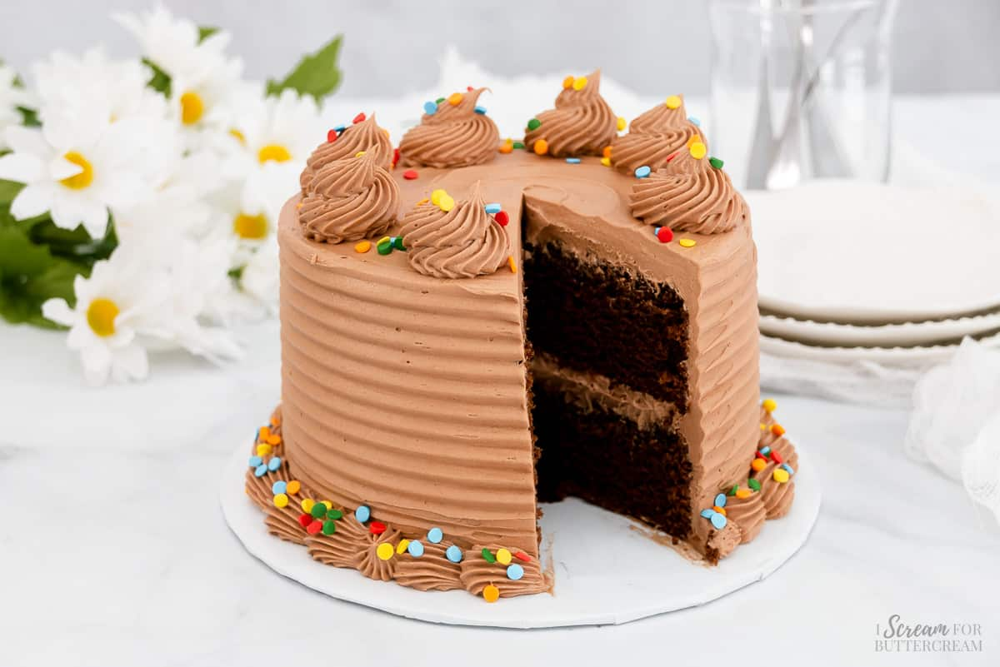

Grilled Lemon Chicken
Ingredients:
- Full Chicken
- 1 lemon (juiced)
- 2 tbsp olive oil
- 1 tsp garlic powder
- Salt and pepper to taste
Steps:
- Mix lemon juice, olive oil, garlic powder, salt, and pepper.
- Marinate chicken for 30 minutes.
- Grill for 6-7 minutes per side until fully cooked.
- Serve hot with a side salad.
Honey Garlic Chicken

Ingredients:
- 4 chicken thighs
- 3 tbsp honey
- 2 cloves garlic (minced)
- 2 tbsp soy sauce
- 1 tbsp olive oil
Steps:
- Heat olive oil in a pan and cook chicken.
- Mix honey, garlic, and soy sauce.
- Pour sauce over chicken and simmer for 5 minutes.
- Serve hot with rice.
Chocolate Cake

Ingredients:
- 1 cup flour
- 1/2 cup cocoa powder
- 1 cup sugar
- 2 eggs
- 1/2 cup milk
- 1/2 cup melted butter
Steps:
- Preheat oven to 350°F (175°C).
- Mix all ingredients together.
- Pour into a greased baking pan.
- Bake for 30 minutes.
- Let cool and serve.
Fried Rice

Ingredients:
- 2 cups cooked rice
- 1/2 cup mixed vegetables
- 2 eggs
- 2 tbsp soy sauce
- 1 tbsp oil
Steps:
- Heat oil in a pan.
- Scramble eggs and remove from pan.
- Stir-fry vegetables, then add rice and soy sauce.
- Mix eggs back in and cook for 2 more minutes.
- Serve hot.